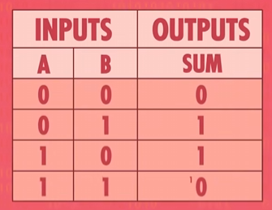
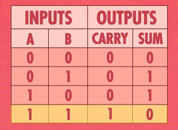
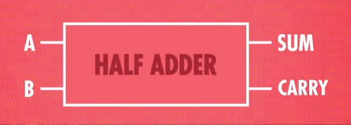
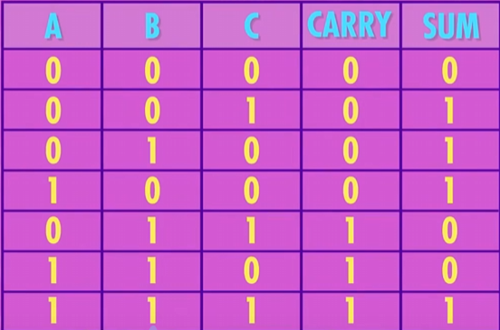
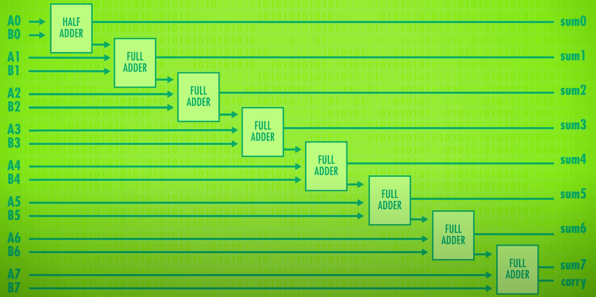
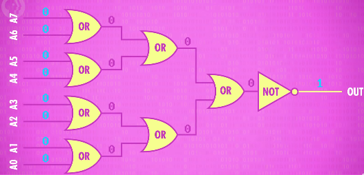
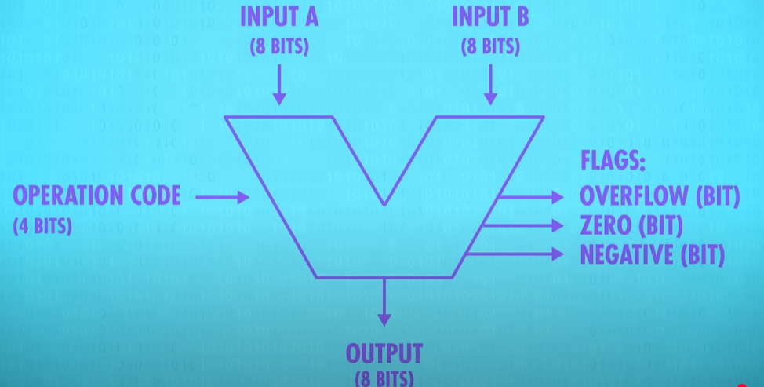

算数逻辑单元，通常叫做 ALU（Arithmetic & Logic Unit），它包含两个单元：算数单元和逻辑单元
算数单元
算数单元负责了计算机的所有算数计算，了解它需要先理解半加器和全加器
半加器
思考我们在单个 bit（位） 上做二进制加法：

加法非常简单，但是结果无法用单个位存储，因为 1 + 1
的结果带有进位（Carry），所以我们需要有两个输出值：

因此，我们可以抽象出一个 半加器（half adder）：

全加器
如果我们要实现多位数的相加，那么除了最低位，其余位都要处理这个进位，所以输入的值会变成三个：

所以我们又抽象出了一个 全加器（full adder）：
制作 8 位加法器
通过半加器和全加器，我们可以对多位表示的数进行加法运算，由于最低位不计算进位，所以使用半加器去处理，剩余的位使用全加器：

由此我们得到了一个 8 位行波进位加法器（8-bit ripple carry adder）
注意最高位仍然有一个进位，当这个进位为 1，代表两个数字之和太大，发生了溢出
ALU 的其他算数能力
包含上面部分说的加法，ALU 一般还可以做以下的运算：
- 加法
- 带进位的加法
- 减法
- 带借位的减法
- 正负取反
- 自增
- 自减
- 数字无改变，通过（All bits of A are passed through unmodified）
对于简单的 ALU
来说，它们没有能直接处理乘法和除法的算数单元，但是可以通过多次简单的运算来达到目的，比如
12 x 5 变为
12 + 12 + 12 + 12 + 12，而现代计算的 CPU
比较先进，它们具备了专门做乘除法的算数单元
逻辑单元
逻辑单元用来处理一些逻辑运算，比如
AND、OR、NOT、XOR
等，也可以用于做一些简单的数值测试，比如检查 ALU 的输出是否为 0

ALU 的抽象
一般工程师使用下图的 “V” 型图标表示一个 ALU ：

ALU 要求有两个 8 位的输入值，另外还要 4 位的操作码，以此来确定怎么处理两个函数的计算（比如 1000 代表相加），最终输出一个 8 位的值，另外还有一些标记位（单个 bit），比如图中的三个：
- Overflow：运算是否发生了溢出
- Zero：运算结果是否为零，判断两个数值是否相等的时候很有用
- Negative：运算结果是否为负，判断大小时有用
一些高级的 ALU 还会有其他的 Flags，但是这三个是比较通用的